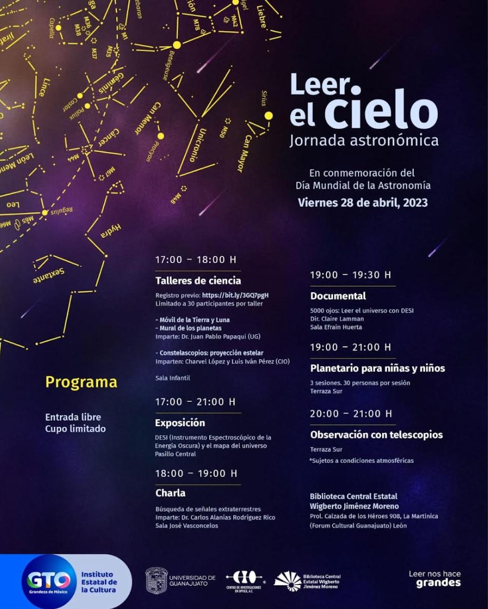

Jornada realizada · Abril 2023
Día Mundial de la Astronomía
Entrada libre, cupo limitado.

Imparte: Dr. Juan Pablo Papaqui
Universidad de Guanajuato
Imparten: Charvel López y Luis Iván Pérez
Centro de Investigaciones en Óptica (CIO)
Sala Infantil
Exposición sobre el Instrumento Espectroscópico de Energía Oscura (DESI) y el mapa del universo.
Pasillo Central
Imparte: Dr. Carlos Alanís Rodríguez Rico
Sala José Vasconcelos
Dir. Claire Lamman
Sala Efraín Huerta
Terraza Sur
Terraza Sur
Sujeta a condiciones atmosféricas.
Organizaron el Instituto Estatal de la Cultura de Guanajuato, la Universidad de Guanajuato, el Centro de Investigaciones en Óptica y la Biblioteca Central Estatal Wigberto Jiménez Moreno.
Descargar póster